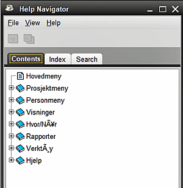

Fra HJELP >> Hjelp Innhold, du kan utføre flere oppgaver i Hjelp Navigator, inkludert bla gjennom eller søke i hjelpemner, og skrive ut en kopi av hvilket som helst valgt emne. 1. Hjelpinnhold-skjermen viser hjelpesystemets innholdsfortegnelse, og fra den kan du velge emner du vil vise, se emnet Indeks eller søke etter bestemte elementer 2. Hver oppføring med boksymbol indikerer at det er en utvidet liste over elementer som kan avsløres ved å dobbeltklikke på boken, eller klikke en gang på pluss + tegnet. 3. Dobbeltklikk på enkeltelementer åpner emnevinduet for det aktuelle elementet. Hovedmenyen og emnelisten 1. FIL-menyen gir alternativer fo: 2. VIEW-menyen gir muligheten til å vise fanene: Contens, Index eller Search 3. HELP-menyen viser gjeldende versjonsdetaljer for Help-programvaren. INNHOLD FAN Emneskjermbilder 1. På hvert emneskjermbilde kan du lese gjennom hjelpefilen 2. FIL-menyen lar deg skrive ut emnet, lukke emnevinduet eller avslutte fra hjelpefilene 3. GO-menyen lar deg gå tilbake eller fremover gjennom emner du har surfet i denne økten, og dette kan også oppnås via hurtigtastene (ALT-venstre eller ALT-høyre) eller ved å bruke pilikonene 4. VERKTØY-menyen lar deg gå tilbake til Help Navigator-vinduet (hvis du tidligere hadde lukket det) for å søke i andre emner, Kopier uthevet tekst (CTRL-C), Uthev all tekst (CTRL-A), Finn ord eller setninger der emne og øke eller redusere emnets skriftstørrelse 5. Det er også ikoner for å åpne Help Navigator på nytt, for å gå tilbake eller fremover gjennom Help-emner som er vist i denne økten og for å skrive ut dette emnet. INDEKSFAN Dette fungerer som en plukkliste, åpner emner eller ord i hele hjelpesystemet når du skriver bokstaver i indeksfeltet. Når et ord blir eksponert, kan du dobbeltklikke på det for å se ordet i et hjelpemne. SØKTAB 1. Når du jobber på en mer definert måte enn indeksoperasjonen, tillater søkealternativet store og små bokstaver og du kan klikke på resultatene for å åpne det aktuelle emnevinduet. Klikk på X-skjermikonet, eller FIL >> Lukk (CTRL-W) eller FIL >> Exit (ALT-F4) for å forlate Help Navigator-vinduet.
|
|
Relaterte temaer |